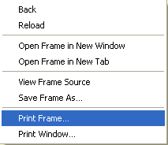

In order to properly print your
report in Safari, you will need to do the following:
Right-click anywhere in the report and choose "Print Frame..."

Choose your printer and print options as you normally would